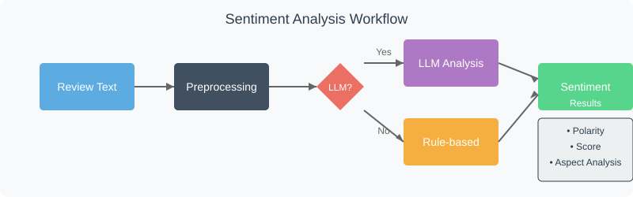

Chapter 5: Sentiment Analysis Agent
Welcome back to the EggHatch AI tutorial! In the last chapter, Data Pipeline, we learned how our system gathers, cleans, and prepares raw data, like customer reviews, making it ready for analysis.
Now that we have this clean data, what can we do with it? One very useful thing is to understand how people feel about the products they are reviewing. This is where the Sentiment Analysis Agent comes in.
What is the Sentiment Analysis Agent?
Think of the Sentiment Analysis Agent as a mood ring for text. Its special job is to read a piece of text, like a customer review, and tell us the overall feeling or sentiment expressed in that text.
Is the reviewer expressing a:
- Positive feeling? (e.g., "This laptop is amazing!")
- Negative feeling? (e.g., "Battery life is terrible.")
- Neutral feeling? (e.g., "The box arrived today.")
This agent uses a special type of AI model (a pre-trained language model) that's good at understanding the nuances of human language to figure this out. It also has a simple backup plan (a rule-based fallback) in case the main AI model isn't available.
Knowing the sentiment of reviews is incredibly helpful! It tells us whether customers are generally happy or unhappy with a product or a specific feature.
How the Sentiment Analysis Agent Works
The Sentiment Analysis Agent in EggHatch AI follows a multi-step process to analyze sentiment:

Sentiment Analysis Techniques
The Sentiment Analysis Agent uses several techniques to understand the sentiment in text:
Polarity Detection
Determining if text is positive, negative, or neutral
Intensity Analysis
Measuring how strong the sentiment is (slightly positive vs. extremely positive)
Aspect-Based Analysis
Identifying sentiment toward specific features (e.g., battery life, display quality)
Contextual Understanding
Recognizing sarcasm, idioms, and other complex language patterns
The Sentiment Analysis Implementation
Let's look at a simplified version of the Sentiment Analysis Agent code:
class SentimentAnalysisAgent:
def __init__(self):
# Initialize the LLM client for advanced sentiment analysis
self.llm_client = LLMClient()
# Load sentiment lexicon for rule-based fallback
self.positive_words = self._load_lexicon("data/lexicons/positive_words.txt")
self.negative_words = self._load_lexicon("data/lexicons/negative_words.txt")
# Load prompts for LLM
self.prompts = Prompts()
def _load_lexicon(self, file_path):
"""Load a lexicon of sentiment words from a file"""
try:
with open(file_path, 'r') as f:
return set(line.strip().lower() for line in f if line.strip())
except Exception as e:
print(f"Error loading lexicon {file_path}: {str(e)}")
return set()
def analyze_sentiment(self, text, use_llm=True):
"""
Analyze the sentiment of a piece of text
Returns a dictionary with sentiment information
"""
if use_llm:
try:
# Use LLM for more nuanced sentiment analysis
return self._analyze_with_llm(text)
except Exception as e:
print(f"LLM sentiment analysis failed: {str(e)}")
# Fall back to rule-based approach
return self._analyze_with_rules(text)
else:
# Use simpler rule-based approach
return self._analyze_with_rules(text)
def _analyze_with_llm(self, text):
"""Use LLM to analyze sentiment with more nuance"""
prompt = self.prompts.get_prompt("sentiment_analysis").format(text=text)
response = self.llm_client.generate_text(prompt)
try:
# Parse the LLM response
import json
result = json.loads(response)
# Ensure the result has the expected format
if not all(k in result for k in ['polarity', 'score', 'aspects']):
raise ValueError("LLM response missing required fields")
return result
except Exception as e:
print(f"Error parsing LLM sentiment response: {str(e)}")
# Fall back to rule-based approach
return self._analyze_with_rules(text)
def _analyze_with_rules(self, text):
"""
Use a simple rule-based approach for sentiment analysis
This is a fallback when the LLM approach fails
"""
# Preprocess text
words = text.lower().split()
# Count positive and negative words
positive_count = sum(1 for word in words if word in self.positive_words)
negative_count = sum(1 for word in words if word in self.negative_words)
# Calculate overall sentiment
total_sentiment_words = positive_count + negative_count
if total_sentiment_words == 0:
polarity = "neutral"
score = 0.0
else:
score = (positive_count - negative_count) / total_sentiment_words
if score > 0.1:
polarity = "positive"
elif score < -0.1:
polarity = "negative"
else:
polarity = "neutral"
# Return a simplified result
return {
"polarity": polarity,
"score": score,
"aspects": {} # No aspect-based analysis in the rule-based approach
}
def analyze_reviews(self, reviews):
"""
Analyze sentiment for a list of reviews
Returns aggregated sentiment statistics
"""
if not reviews:
return {
"overall_sentiment": "neutral",
"average_score": 0.0,
"review_count": 0,
"positive_count": 0,
"negative_count": 0,
"neutral_count": 0,
"aspect_sentiments": {}
}
# Analyze each review
sentiments = [self.analyze_sentiment(review["text"]) for review in reviews]
# Count sentiments by polarity
positive_count = sum(1 for s in sentiments if s["polarity"] == "positive")
negative_count = sum(1 for s in sentiments if s["polarity"] == "negative")
neutral_count = sum(1 for s in sentiments if s["polarity"] == "neutral")
# Calculate average sentiment score
average_score = sum(s["score"] for s in sentiments) / len(sentiments)
# Determine overall sentiment
if positive_count > negative_count and positive_count > neutral_count:
overall_sentiment = "positive"
elif negative_count > positive_count and negative_count > neutral_count:
overall_sentiment = "negative"
else:
overall_sentiment = "neutral"
# Aggregate aspect-based sentiments
aspect_sentiments = {}
for sentiment in sentiments:
for aspect, aspect_data in sentiment.get("aspects", {}).items():
if aspect not in aspect_sentiments:
aspect_sentiments[aspect] = {
"mentions": 0,
"positive": 0,
"negative": 0,
"neutral": 0,
"average_score": 0.0
}
aspect_sentiments[aspect]["mentions"] += 1
aspect_sentiments[aspect][aspect_data["polarity"]] += 1
aspect_sentiments[aspect]["average_score"] += aspect_data["score"]
# Calculate averages for aspects
for aspect, data in aspect_sentiments.items():
if data["mentions"] > 0:
data["average_score"] /= data["mentions"]
return {
"overall_sentiment": overall_sentiment,
"average_score": average_score,
"review_count": len(reviews),
"positive_count": positive_count,
"negative_count": negative_count,
"neutral_count": neutral_count,
"aspect_sentiments": aspect_sentiments
}
Key Features of the Sentiment Analysis Agent
LLM-Powered
Uses advanced language models for nuanced understanding
Fallback System
Has a simpler rule-based approach as backup
Aspect Analysis
Identifies sentiment for specific product features
Aggregation
Combines multiple reviews for overall product sentiment
Example: Sentiment Analysis in Action
Let's see how the Sentiment Analysis Agent would process a real customer review:
Customer Review:
"I bought this gaming laptop last month and I'm mostly happy with it. The display is absolutely stunning and games run super smoothly. However, the battery life is disappointing - I only get about 2 hours when not gaming. The keyboard feels great to type on though!"
Sentiment Analysis Result:
{
"polarity": "positive",
"score": 0.65,
"aspects": {
"display": {"polarity": "positive", "score": 0.95},
"performance": {"polarity": "positive", "score": 0.85},
"battery_life": {"polarity": "negative", "score": -0.75},
"keyboard": {"polarity": "positive", "score": 0.80}
}
}
This analysis shows that while the overall sentiment is positive, there's a specific pain point (battery life) that potential buyers should be aware of.
Next Steps
Now that you understand how the Sentiment Analysis Agent extracts feelings and opinions from reviews, let's move on to Chapter 6: Trend Analysis Agent, where we'll explore how EggHatch AI identifies patterns and trends across multiple products and reviews.